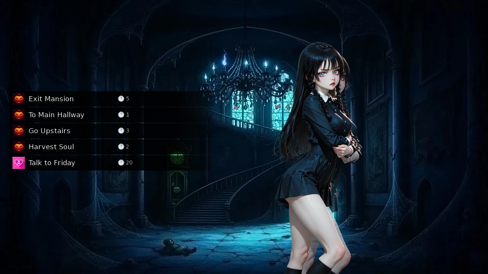
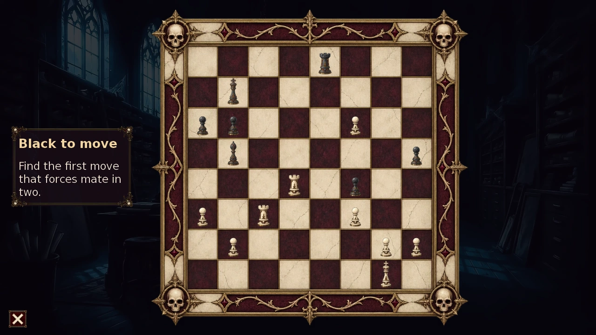
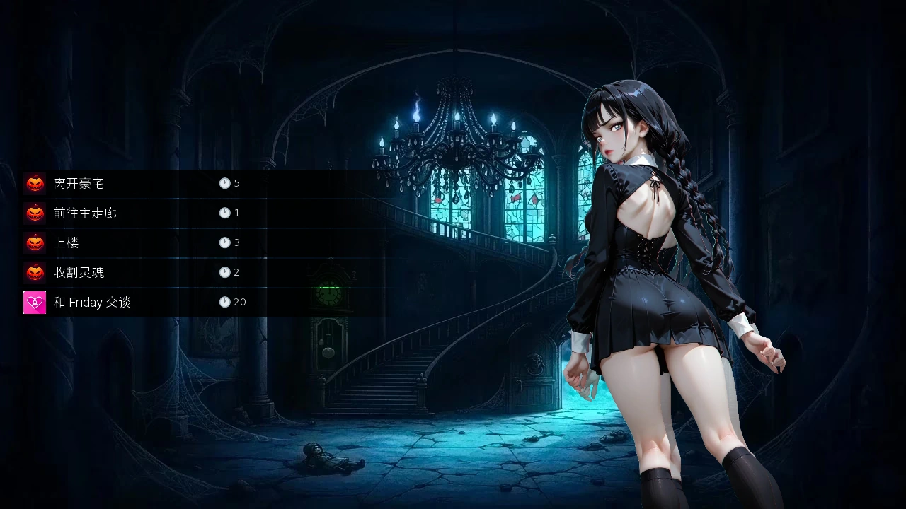
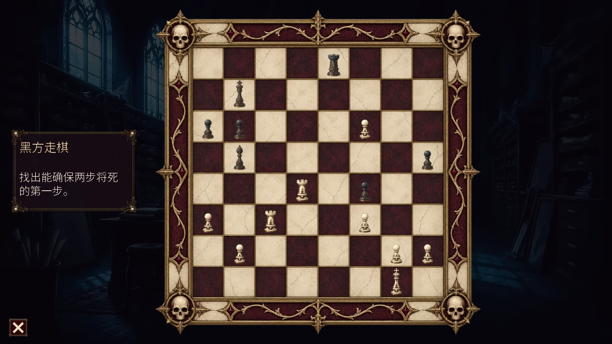

Select a screenshot to enlarge it. Screens show example inventories and progress.
Explore first, solve only when you need help
The Haunted Mansion is a permanent optional exploration and puzzle adventure. The original quest introduces Friday and the Soul Jar; Halloween: The 2nd Story continues it with new wings, ten preparatory challenges and a final evidence puzzle. There is no real-world Halloween deadline.
Begin by meeting Friday outside, entering the Foyer, receiving the Soul Jar, selecting Harvest Soul and clicking the small blue orb. A jumpscare or victory screen is only the reveal: the orb must actually be collected. Keep this rule in mind throughout both chapters.
This guide gives routes, controls, requirements and rewards. Simple word and music answers are optional below; mystery conclusions and character outcomes are left for discovery.
Unlocking and returning
Use Enter Redeem Code at Lillian’s Lair in the Medieval era or Seraph’s Sanctuary in the Future Fringe Zone, and enter the public event code HALLOWEEN, preserving capitals. Then travel to Present → Uptown → Haunted Manor, the map icon below Whispering Woods. Finish Meeting Friday outside and The Soul Jar in the Foyer.
The Second Story needs its own content unlock, completion of the original Foyer ceremony and its introduction at the Exterior. Revisit the Exterior after meeting those conditions. The unlock alone does not complete the original quest or open every later passage.
You may leave and return. Collected souls, completed puzzles and awarded milestones are saved; disabling the event destination does not serve as a progress reset. The mansion’s Dungeon room is separate from the ordinary combat dungeon.
Time and resource planning
| Activity | Base cost |
|---|---|
| Enter/Exit Mansion | 5 min each |
| Harvest Soul | 2 min; collecting the visible orb is a separate click |
| Read Book / Call out name | 2 min each |
| Look at Blackboard / Look at Toys | 1 min each |
| Arrange Blocks | 2 min |
| Play Piano | 10 min |
| Play Hangman | 3 min per attempt |
| Monster Dance | 15 min per run |
| Review Clues / Solve Mystery | 1 min /2 min |
| Second Story puzzle entry and retry | No Wealth, Energy or in-game-time charge |
| Second Story Harvest Soul | 2 min |
Most ordinary room travel uses one minute; connecting stairs may take more. Second Story doors and stairs use 1–4 minutes. Follow the displayed travel quote. Evidence actions usually take one minute, with the Dining Room memory and Crypt notes taking two. Puzzle mistakes do not take Stamina: it is an attribute, not a mansion life meter.
The original Master Bedroom soul additionally requires Friday 100+points and Friday’s Resolve, whose base cost is 45 minutes,40 Energy and 30 Calm. Other private Friday scenes are optional for soul completion. No adult scene images are needed to use this guide.
Reveal, harvest and collect are different steps
Ordinary rooms use Harvest Soul, then the revealed orb. Some original puzzles reveal the orb directly; Second Story victories generally unlock Harvest Soul back in the room, which then reveals it. Finish the room action and click the orb before leaving.
The original chapter has 21 collectible entries worth 22 Soul Jar units, because the Attic Twins’ single orb adds two. The original ceremony checks 21 units in the Foyer, so it can occur before every original entry is collected. Complete the room checklist anyway. The Second Story adds 11 more one-unit entries; its wing gates check the correct collected orbs and conclusions, not a large combined counter alone.
Each unit gives 10 base Friday relationship points, so the Twins give 20. Ambient translucent hallway ghosts do not count. A missing counter increase usually means a revealed orb still needs clicking.

A practical original-chapter route
- Foyer tutorial, then Main Hallway → Dining Room, Ballroom/Music Room and Library.
- Kitchen Hallway → Kitchen, Conservatory Passage → Greenhouse → Courtyard → Ornamental Pond. The Courtyard can be reached this way before using its exterior shortcut.
- Go upstairs for the Nursery, Bathroom, Sewing Room and soul-gated Bedroom. Complete the Master Bedroom requirement when Friday is ready.
- Use Kitchen → Basement Stairs → Basement Landing → Basement Corridor for Cellar, Meat Locker, Servant Quarters and Dungeon.
- At 16 units, enter the Crypt and solve its mystery. Complete the Terrace dance and the 15-unit Attic whenever convenient.
- Return to the Foyer for the ceremony, and check that every original orb was collected.
| Passage | Collected units |
|---|---|
| Exterior → Courtyard shortcut | 2 |
| South Corridor → Bedroom | 9 |
| East Wing → Master Bedroom | 11 |
| South Corridor → Attic | 15 |
| Crypt Stairs → Crypt | 16 |
Soul gates do not spend souls. A revealed but uncollected orb does not satisfy them.
Original soul checklist by room
All 21 original collection entries
| Room | Reveal requirement | Jar units |
|---|---|---|
| Foyer | Finish Soul Jar introduction, then Harvest | 1 |
| Dining Room | Harvest | 1 |
| Ballroom | Harvest | 1 |
| Music Room | Piano puzzle | 1 |
| Library | Read Book and solve name riddle | 1 |
| Kitchen | Harvest | 1 |
| Greenhouse | Harvest | 1 |
| Courtyard | Win one Hangman phrase | 1 |
| Ornamental Pond | Harvest | 1 |
| Bedroom | 9-unit entry, Harvest | 1 |
| Nursery | Inspect both clue objects, solve blocks | 1 |
| Bathroom | Harvest | 1 |
| Master Bedroom | 11-unit entry, Friday 100+, Friday’s Resolve, Harvest | 1 |
| Sewing Room | Harvest | 1 |
| Rooftop Terrace | Monster Dance 15,000+, then Harvest | 1 |
| Attic | 15-unit entry, Harvest | 2 |
| Cellar | Harvest | 1 |
| Meat Locker | Harvest | 1 |
| Servant Quarters | Harvest | 1 |
| Dungeon | Harvest | 1 |
| Crypt | 16-unit entry, solve mystery | 1 |
Word, piano and mystery controls
Library: Read Book, close its image, then use Call out name. Nursery: inspect both Blackboard and Toys before Arrange Blocks appears. Music Room: use Play Piano; wrong notes restart the sequence.
Optional Library, Nursery and piano answers
Library: type Faceless Gentleman, the complete English two-word name. Leading/trailing spaces and capitalization are ignored. Nursery: type WITCH, also case-insensitive. Piano: D–E–A–D; either visible D or E octave is accepted, and a wrong D can immediately begin a new sequence. Click each revealed orb afterward.
Crypt mystery: use Review Clues for the twelve records, then Solve Mystery and answer all five questions in the same submission. Evidence appears across the original mansion; current Review Clues exposes all twelve even if you did not open every room’s record. Solving reveals its orb, not a separate Crystal. The culprit and narrative explanation are omitted here.
Hangman: one win versus the full set
Play Hangman in the Courtyard. Select letters; there is no whole-phrase answer field. Seven wrong letters lose the attempt. The first win reveals the room’s orb; winning all 25 distinct phrases earns one Crystal. Won phrases are removed from the pool, and losses do not erase earlier wins.
Each attempt costs 3 minutes. After the one-time Crystal is earned, the courtyard action disappears. Complete the phrase pattern deliberately rather than repeating already ruled-out letters.
Show all 25 Hangman answers (spoilers)
Match the word lengths and revealed letters to a phrase below, then select its remaining letters.
OAK TREEFALSE CHARGEFAMILY HEIRLOOMTRUSTED SERVANTWRONGFUL DEATHHANGED INNOCENTJEALOUS MASTERWITHOUT EVIDENCEPLANTED EVIDENCEFAITHFUL WORKERINNOCENT VICTIMTRAGIC INJUSTICEOXIDIZED SHEARSCRAZY ACCUSATIONZEALOUS REVENGEUNJUST EXECUTIONMAXIMUM CRUELTYVEXED EMPLOYERWICKED SCHEMEJEWELRY BOXCOMPLEX FRAMEANXIOUS DENIALQUICK JUDGMENTVEXING MYSTERYSQUEEZED NECK
Monster Dance on the Terrace
Use Down/Left/Right/Up for their matching arrow prompts and Space for the purple square. Perfect gives 100 points, Good 50; wrong or late input gives zero. Reach 15,000 points, then return to the Terrace, use Harvest Soul and click its orb.
The timing windows are normally±44 ms for Perfect and±88 ms for Good. Owning Lute adds 5 ms to both. Time Potion and the ordinary dance difficulty score multiplier do not double this mansion challenge’s points. Missing notes does not directly subtract points; controlled hits are better than frantic extra inputs.
Opening the five new wings
After the Second Story introduction, start from these original rooms:
- Library or Kitchen Hallway → Hidden Study / Architectural Archive.
- Sewing Room or Upper Hallway → West Passage / Portrait Gallery, then Mirror Room, Doll Room and Sealed Bedroom.
- Courtyard → Labyrinth Gate → Hedge Labyrinth, then Central Pavilion and Ruined Chapel. The pond connects through Garden Exit.
- Cellar → Pump Room, or Crypt → Embalming Room, with Underground Reservoir connecting them.
- Attic → Clockwork Stairway → Observatory; the Observatory also connects to the Terrace.
Win the room challenges, then harvest and collect every required orb. Return for each wing’s concluding visit: Hidden Study, Sealed Bedroom, Ruined Chapel, Underground Reservoir and Observatory. All five conclusions are required before the Underground Reservoir passage opens to the Hall of Names. Visiting every room without its objectives does not complete a wing.
The ten preparatory challenges
| Room | Visible action | Goal |
|---|---|---|
| Hidden Study | Examine the Banquet Picture | Find 15 differences, switching between two pictures |
| Architectural Archive | Examine the Chessboard | Solve one of 15 distinct chess riddles |
| Portrait Gallery | Restore Portrait | Arrange and rotate 24 fragments on a 5×5 board |
| Mirror Room | Arrange the Mirrors | Return the light through all six mirrors |
| Doll Room | Make the Doll | Match all five parts to the written clues |
| Central Pavilion | Enter the Hunting Paths | Finish four lantern paths |
| Ruined Chapel | Ring the Chapel Bells | Echo the sequence from three notes through thirteen |
| Pump Room | Play Gideon's Game | Win Zombies and Healers |
| Embalming Room | Play Merrick's Game | Win four-in-a-row |
| Observatory | Look Through the Telescope | Complete three charts and the final telescope target |
Each listed room contributes one required collected orb. A win alone is insufficient. The additional Hall of Names puzzle supplies the eleventh Second Story collection.
Picture, portrait, mirrors and doll
Banquet picture: click a changed detail in either image. Use the curved arrow to flip; found differences stay marked on both sides. All 15 must be found within the attempt.
Portrait: click a tile adjacent to the blank to slide it. Double-click/double-tap a fragment to rotate, or select it and press Rotate. All 24 tiles must have the right position and orientation; a correct-looking position with a rotated tile is unfinished.
Mirrors: select a mirror and an empty square to place it. Select placed mirrors to Rotate or Recall. A completed path must pass through six distinct mirrors and return to the far mirror. Repeated turns do not accumulate progress; it is the current intact path that matters. Reset clears this attempt.
Doll: reread the six-page story and choose hair, eyes, mouth, outfit and chest ornament. Present the Doll checks all five together. Parts may be replaced freely; mistakes cost nothing. Reading alone does not complete the challenge. Reset removes all parts, and an unfinished doll is discarded on exit.
Lantern paths, bells and stars
Hunting Paths: hold and drag the lantern through all four paths. Touching a hedge returns you to the start of the current path, not the first path. The last is a longer spiral. Move steadily through turns; leaving abandons the unfinished run.
Bells: five bells have different positions, tones and glows. Watch the whole melody, then repeat it. It starts at three notes and grows to thirteen, replaying the full sequence every round. Your response is untimed. One wrong bell ends the attempt; opening again chooses one of three melodies.
Telescope: drag the sky, use pan buttons or arrow keys. Match the three numbered charts to bright cross-shaped stars, tapping from 1 and returning to 1. A wrong star clears only the current trace; faint specks are decoration. After all three charts, centre the differently drifting gold star in the reticle and tap it. There is no timer. Reset restarts all charts; only full completion is saved.
Chess, four-in-a-row and Zombies and Healers
Chess: drag a piece of the indicated side onto its destination. Only the first move is required, even for mate-in-two riddles. Dropping outside the board or back at its starting square cancels the drag. An incorrect move ends the attempt. Each opening selects an unsolved riddle; one correct riddle opens harvest, while all 15 distinct solutions earn Grandmaster’s Signet.
Four-in-a-row: you move first with ivory skulls. Click a column to drop into its lowest empty space; connect four horizontally, vertically or diagonally before the red eyes do. Block an immediate threat and look for moves that create two winning threats.
Zombies and Healers: select your plague doctor, then a highlighted destination. A one-square move clones; a two-square jump relocates. Every enemy adjacent to the landing square, including diagonals, changes sides. A player unable to move passes. A full board, elimination or no moves for either side ends the match; the larger count wins.
Both board opponents respond to the game’s Easy/Normal/Hard difficulty. Their win conditions and reward thresholds are unchanged. Each first victory opens its soul harvest. Ten cumulative wins earn a separate permanent prize; losses, draws and exits do not erase the win total. You can keep playing after the prize.

The Hall of Names: evidence without a memory test
Complete all five wing conclusions to enter from the Underground Reservoir. Use Examine the Names. For each wing, select two illustrated objects answering the claim, then the finding they establish. Inspect opens the full supporting record; all clues are available inside the puzzle.
Correctly restored wings remain saved across exits. Mistakes cost nothing; Clear choices resets only the current unfinished answer. After five restorations, answer three final claims using two different findings per claim, using all six once. The unfinished final argument is discarded if you leave. Only all three correct pairs unlock the final Harvest Soul, which must still be used before collecting its orb.
Further character content after collection has its own visit and conversation requirements. It is separate from the optional fifteen-riddle and ten-win mastery rewards.
Optional rooms after their challenges
| Entrance | Additional condition |
|---|---|
| Mirror Room → Mourning Parlour | Complete the mirror challenge. |
| Central Pavilion → Thorn Conservatory | Complete the lantern paths. |
| Observatory → Eclipse Chamber | Complete the telescope challenge. |
| Hall of Names → Coffin Chamber | Complete the five wings, collect the Hall’s final orb and finish the available follow-up visit in the Hall. |
The first three rooms provide optional conversations. Their private content is separate from the five wing conclusions. Once the final room is open, the Foyer also provides a shortcut. Return passages remain available; meeting a room’s entry condition does not reset its completed challenge.
Completion and optional mastery rewards
| Goal | Reward | Effect |
|---|---|---|
| Original Foyer ceremony | Ornate Locket +1 Crystal | Locket:10% effective Charm and Attractiveness, minimum+1 each; higher Attractiveness relationship-bonus cap |
| All 25 Hangman phrases | 1 Crystal | One-time independent achievement |
| All 15 distinct chess riddles | Grandmaster’s Signet | +1 maximum relationship-reward roll for every alignment |
| Ten four-in-a-row wins | Merrick's Fourfold Seal | +1 Weapon Level Modifier |
| Ten Zombies and Healers wins | Gideon's Quarantine Ward | +1 Armor Level Modifier |
| Soul collection | 10 base Friday points per jar unit | Twins count twice; positive-award bonuses can still apply |
| Later Second Story collection | Army roster reward | Check the Army roster after completing the final collection |
Most individual puzzles award access to a soul rather than a separate Crystal. One chess riddle is enough for its wing; all 15 are optional mastery. Likewise, one board victory is enough for each soul; ten wins are a separate goal. Combat-level modifiers are passive ownership rewards, not purchases to repeat indefinitely.
What to check when a passage or orb is missing
- Map icon absent: enable the original event and use the Present Uptown map.
- Counter unchanged: finish revealing, then click the blue orb; a scare does not collect it.
- Original ceremony missing: have 21 jar units and return to the Foyer.
- Master Bedroom harvest absent: check 11 units, Friday 100+ and the required completed action.
- Second Story rooms absent: its unlock, original ceremony and Exterior introduction are all required.
- Hall still locked: collect the correct orbs and revisit each of the five concluding rooms.
- Won a new puzzle but no soul: return to the room’s Harvest Soul action, then collect.
- Retry lost the board: unfinished attempts are temporary; completed challenges, distinct chess solutions and cumulative board wins remain saved.
See Friday, Items, Armies and Relationships.
先探索，需要时再看解法
闹鬼豪宅是永久开放的可选探索解谜内容。原篇介绍 Friday 与灵魂罐，万圣节：第二篇故事继续开放新区域、十项前置挑战与最终证据谜题，不受现实万圣节日期限制。
先在外部见 Friday，进入门厅取得灵魂罐，选择「收割灵魂」，再点击小蓝色光球。惊吓演出或胜利画面只代表揭示，实际点击收集光球才算获得，两篇都遵循这点。
本页给路线、操作、条件和奖励，简单文字与乐曲答案可按需展开，悬案结论和角色结果留待探索。
开启与返回
在中世纪 Lillian 的巢穴或未来边缘区 Seraph 的圣所使用输入兑换码，输入公开活动码HALLOWEEN，保留大写。然后前往现代 → 上城区 → 闹鬼庄园，地图图标位于低语森林下方，完成外部的初见与门厅的灵魂罐教学。
第二篇另需对应内容解锁、原篇门厅仪式完成，以及豪宅外部的第二篇开场。满足后再到外部，单纯解锁不会替你完成原任务，也不会立即打开所有后续通道。
可以离开后再回来，已收灵魂、完成谜题和领取奖励都会存档；停用活动地点不等于重置。豪宅里的地牢房间与普通战斗地下城是两套内容。
安排时间与资源
| 行动 | 基础费用 |
|---|---|
| 进出豪宅 | 各5分钟 |
| 收割灵魂 | 2分钟，光球另行点击收集 |
| 读书／喊出名字 | 各2分钟 |
| 查看黑板／查看玩具 | 各1分钟 |
| 排列积木 | 2分钟 |
| 弹钢琴 | 10分钟 |
| 玩猜词游戏 | 每次3分钟 |
| 怪物之舞 | 每次15分钟 |
| 复查线索／破解谜团 | 1分钟／2分钟 |
| 第二篇谜题进入与重试 | 不收财富、精力或游戏时间 |
| 第二篇收割灵魂 | 2分钟 |
普通房门多为1分钟，楼梯可能更长；第二篇门路为1–4分钟，请看行动报价。证据通常1分钟，餐厅记忆与地穴笔记为2分钟。谜题失误不扣耐力，它是属性，不是豪宅生命条。
原篇主卧的灵魂还需 Friday 关系100以上与「Friday的决心」，基础45分钟、40精力、30镇定。其他 Friday 私人场景不是收齐灵魂所必需，本页也无需成人结果图片。
揭示、收割与收集要分清
普通房间先收割灵魂，再点击光球。有些原篇谜题会直接揭示光球，第二篇胜利通常是回房间后开放收割灵魂，再揭示并收集。离开前应完成地点行动与光球点击。
原篇有21个收集项目，共22份灵魂罐计数，因为阁楼双子的一个光球算两份。门厅仪式只检查21份，因此可能在原篇项目尚未全齐时触发，仍应完成下方清单。第二篇再增加11个各算一份的项目，其区域门槛检查对应光球和总结完成，不能只靠合计数够高。
每份给予10点基础 Friday 关系奖励，双子为20。走廊的半透明环境幽灵不算收集，计数没增加通常是揭示后尚未点光球。

原篇的实用探索顺序
- 完成门厅教学，再从主走廊探索餐厅、舞厅／音乐室与图书馆。
- 厨房走廊通往厨房，温室通道经温室到庭院与景观池，不必先开外部庭院捷径。
- 上楼探索育婴室、浴室、缝纫室和有灵魂门槛的卧室；Friday 准备好后完成主卧条件。
- 厨房经地下室楼梯、地下室平台与地下室走廊，前往地窖、肉库、仆人住处和地牢。
- 16份后进入地穴破解悬案，方便时完成露台舞蹈及15份门槛的阁楼。
- 返回门厅完成仪式，并检查原篇光球是否全部收齐。
| 通道 | 已收份数 |
|---|---|
| 外部 → 庭院捷径 | 2 |
| 南走廊 → 卧室 | 9 |
| 东翼 → 主卧 | 11 |
| 南走廊 → 阁楼 | 15 |
| 地穴楼梯 → 地穴 | 16 |
门槛不消耗灵魂，已经揭示却未点击的光球不算。
按房间核对原篇光球
原篇全部21个收集项目
| 房间 | 揭示条件 | 份数 |
|---|---|---|
| 门厅 | 完成灵魂罐教学，再收割 | 1 |
| 餐厅 | 收割 | 1 |
| 舞厅 | 收割 | 1 |
| 音乐室 | 钢琴谜题 | 1 |
| 图书馆 | 读书并解出名字 | 1 |
| 厨房 | 收割 | 1 |
| 温室 | 收割 | 1 |
| 庭院 | 赢一局猜字 | 1 |
| 景观池 | 收割 | 1 |
| 卧室 | 9份入口，收割 | 1 |
| 育婴室 | 查看两件线索物，再解积木 | 1 |
| 浴室 | 收割 | 1 |
| 主卧 | 11份入口，Friday 100以上，完成所需场景，再收割 | 1 |
| 缝纫室 | 收割 | 1 |
| 屋顶露台 | 怪物之舞15,000分以上，再收割 | 1 |
| 阁楼 | 15份入口，收割 | 2 |
| 地窖 | 收割 | 1 |
| 肉库 | 收割 | 1 |
| 仆人住处 | 收割 | 1 |
| 地牢 | 收割 | 1 |
| 地穴 | 16份入口，解悬案 | 1 |
文字、钢琴与悬案操作
图书馆：先读书，关闭书本图片，再喊出名字。育婴室：先查看黑板和玩具，才会出现积木行动。音乐室：选择钢琴，错误音符会重新开始序列。
按需查看：图书馆、育婴室与钢琴答案
图书馆输入完整英文两词Faceless Gentleman，不分大小写，首尾空白会忽略。育婴室输入WITCH，同样不分大小写。钢琴为D–E–A–D，可用任一可见的D或E八度；错误音符若恰为D，也可立即成为新序列的开头。之后仍须点击揭示出的光球。
地穴悬案：回顾十二份线索，再在破解谜团中同次答对五问。证据散布原篇房间，当前回顾界面即使尚未逐处打开也会列出全部十二份。解开后揭示光球，不另外奖励水晶；本页不透露凶手与剧情结论。
猜字：一次胜利与完整收藏
在庭院玩猜字，逐个选择字母，没有整句提交栏。猜错七个字母便失败，第一次胜利揭示本房光球；完成全部25个不同词句另获一水晶。赢过的词句会移出题池，失败不清除先前胜利。
每次耗时3分钟，一次性水晶领完后行动消失。可按已知字形逐步判断，不必反复猜已经排除的字母。
展开全部25个猜字答案（剧透）
即使使用中文界面，答案仍是英文词句；中文仅供理解词义。请对照题目的词长与已揭示字母，再逐个选择缺少的字母。
OAK TREE：橡树FALSE CHARGE：不实的指控FAMILY HEIRLOOM：传家宝TRUSTED SERVANT：受信任的仆人WRONGFUL DEATH：冤死HANGED INNOCENT：被绞死的无辜者JEALOUS MASTER：心怀嫉妒的主人WITHOUT EVIDENCE：毫无证据PLANTED EVIDENCE：栽赃的证据FAITHFUL WORKER：忠心的雇工INNOCENT VICTIM：无辜的受害者TRAGIC INJUSTICE：悲惨的冤案OXIDIZED SHEARS：生锈的修枝剪CRAZY ACCUSATION：荒唐的指控ZEALOUS REVENGE：狂热的复仇UNJUST EXECUTION：不公的处决MAXIMUM CRUELTY：极度残忍VEXED EMPLOYER：恼怒的雇主WICKED SCHEME：恶毒的阴谋JEWELRY BOX：首饰盒COMPLEX FRAME：精心策划的陷害ANXIOUS DENIAL：焦急的辩解QUICK JUDGMENT：仓促的判决VEXING MYSTERY：令人困扰的谜团SQUEEZED NECK：被勒住的脖子
露台的怪物之舞
下、左、右、上方向键对应同向箭头，紫色方块用空格。完美100分，良好50分，错误或过晚0分。达到15,000分后回露台收割，再点击光球。
通常完美判定为前后44毫秒，良好88毫秒；持有鲁特琴两者各放宽5毫秒。「时间」药水与普通舞蹈的难度得分倍率，不会在此使分数翻倍。漏音不会直接扣分，稳定命中比乱按更有效。
打开五片新区域
第二篇开场完成后，可从原篇下列地点进入：
- 图书馆或厨房走廊 → 隐秘书房／建筑档案室。
- 缝纫室或上层走廊 → 西侧通道／肖像画廊，再到镜子室、玩偶室与封闭卧室。
- 庭院 → 迷宫入口 → 树篱迷宫，再往中央凉亭与破败礼拜堂；景观池可经花园出口相连。
- 地窖 → 水泵房，或地穴 → 防腐室，由地下蓄水池连接。
- 阁楼 → 机械楼梯 → 观星台，观星台也连到露台。
完成挑战、收割并收齐对应光球后，到各区总结地点：隐秘书房、封闭卧室、破败礼拜堂、地下蓄水池、观星台。五区总结都完成，地下蓄水池才开放通往名字大厅的路；只逛过全部房间不能代替目标完成。
十项前置挑战
| 房间 | 界面行动 | 目标 |
|---|---|---|
| 隐秘书房 | 查看宴会画 | 切换两幅画，找出15处不同 |
| 建筑档案室 | 查看棋盘 | 解对十五个不同棋谜中的一题 |
| 肖像画廊 | 修复肖像 | 在5×5盘排列并转正24块 |
| 镜子室 | 布置镜子 | 让光线经过全部六面镜子返回 |
| 玩偶室 | 制作玩偶 | 按文字线索配对五个部件 |
| 中央凉亭 | 进入狩猎小径 | 完成四段提灯小径 |
| 破败礼拜堂 | 敲响教堂钟 | 从三音逐步复现到十三音 |
| 水泵房 | 挑战Gideon | 赢下僵尸与医者 |
| 防腐室 | 挑战Merrick | 四子连线获胜 |
| 观星台 | 透过望远镜观测 | 完成三张星图及最后观测目标 |
每个表列房间提供一个必须收集的光球，赢了但没收球仍不够。名字大厅的后续谜题提供第二篇第十一个收集项目。
画面、肖像、镜子与玩偶
宴会画：点击任一画面的变化细节，用弯箭头翻面；已找差异会在两面保留标记，需在本次找齐15处。
肖像：点击空格旁的碎片滑动，双击／双触可转向，也可选中后点旋转。24块的位置与方向都要正确，仅位置看似正确但方向不对仍未完成。
镜子：先选镜，再点空格摆放；已放的镜可选中后旋转或收回。完整光路须经过六面不同镜子并返回远端镜面，反复转动不会累积进度，只看当前连通的光路。重置清空本次尝试。
玩偶：可重读六页故事，选择头发、眼睛、嘴、服装与胸饰，呈上时五项一起检查。可自由替换，错了不收费，仅阅读不会完成挑战；重置移除全部部件，退出不保留未完成玩偶。
提灯小径、钟声与星图
狩猎小径：按住提灯拖过全部四段，碰到树篱会退回当前段起点，不会退回第一段，最后一段是更长的螺旋。转角慢稳移动，退出则放弃未完成的整次路线。
钟声：五口钟有不同位置、音色与亮光。看完完整序列再复现，从三音逐步增加至十三音，每轮都会重播整段，玩家作答不计时。错一口钟便结束，重开会从三条旋律选一条。
望远镜：拖天空、点方向钮或用方向键移动。按三张编号星图找明亮十字星，从1按顺序点并回到1。点错只清当前连线，暗小点是装饰。三图完成后，将漂移方式不同的金星移到准心中央并点击。不计时；重置会重开全部星图，只有完整挑战完成才存档。
棋谜、四连棋与僵尸与医者
棋谜：将所示行动方的棋子拖到目的格，二步杀题也只需提交第一步。拖出棋盘或拖回原格可取消，走错结束本次。每次从未解题中选择，解一题开放收割，十五题不同解答全齐则获得棋艺大师印戒。
四连棋：玩家执象牙色骷髅先走，点击一列落到最低空位，先在横、竖或斜线上连四。注意先挡对方立即胜利的点，也可争取同时形成两处威胁。
僵尸与医者：选瘟疫医生，再点高亮目的格。走一格会复制，跳两格会移动原棋子；落点周围含斜向的敌子全部转为己方。无合法步时跳过，满盘、一方消失或双方都不能走时结束，以棋子更多者胜。
两项对战都会随游戏的简单／普通／困难难度改变对手，胜利条件与奖励门槛不变。第一次赢开放该房灵魂收割，累计十胜另获永久奖；输、平或退出不会清空胜场，领奖后也能继续玩。

名字大厅：用证据作答，不靠背诵
五区总结都完成后，从地下蓄水池进入，选择「查验名字」。每区选两件能回答陈述的证物，再选它们共同支持的结论；查阅可打开完整记录，所需线索都在谜题内。
正确复原的区域跨退出保留，错答免费，清除选择只清当前未完成答案。五区复原后，再答三项最终陈述，每项用两条不同发现，六条各用一次。离开会丢弃未完成的最终论证，三组全部正确才开放最终收割，仍须先使用再点击光球。
收集后的角色内容另有到访与对话条件，与十五棋谜、两项十胜精通奖分别计算。
挑战后开放的可选房间
| 入口 | 额外条件 |
|---|---|
| 镜子室 → 悼念会客室 | 完成镜子挑战。 |
| 中央凉亭 → 荆棘温室 | 完成提灯小径。 |
| 观星台 → 月蚀室 | 完成望远镜挑战。 |
| 名字大厅 → 棺室 | 五区完成，收取大厅最终光球，并在大厅完成随后可用的到访剧情。 |
前三间提供可选对话，私人内容与五区总结分别计算。最后房间开放后，门厅也有捷径；回程通道仍可使用，进入条件满足不会重置已完成挑战。
完成与可选精通奖励
| 目标 | 奖励 | 效果 |
|---|---|---|
| 原篇门厅仪式 | 华丽吊坠盒＋1水晶 | 有效魅力与吸引力各＋10%，最低各＋1，并提高吸引力关系随机加点上限 |
| 25个猜字词句全齐 | 1水晶 | 独立一次性成就 |
| 十五个不同棋谜全解 | 棋艺大师印戒 | 所有阵营角色的关系奖励掷值上限＋1 |
| 四连棋累计十胜 | Merrick的四骷印章 | 武器等级修正＋1 |
| 僵尸与医者累计十胜 | Gideon的隔离护符 | 护甲等级修正＋1 |
| 收集灵魂 | 每份10点基础 Friday 关系 | 双子算两份，正向奖励加成仍可能适用 |
| 第二篇后续收集 | 军队名册奖励 | 完成最终收集后查看军队名册 |
多数单项谜题奖励的是灵魂资格，不是额外水晶。棋谜一题就足够推进区域，十五题为可选精通；两项对战也各一胜够收魂，十胜是另一目标。战斗等级修正为持有即生效的奖品，不是可无限重复购买。
通道或光球不见时检查什么
- 没有地图图标：开启原篇活动，并查看现代上城区地图。
- 计数不变：完成揭示后点蓝球，惊吓不等于收集。
- 没有原篇仪式：灵魂罐至少21份，并回门厅。
- 主卧不能收割：检查11份、Friday 100以上及指定行动已完成。
- 没有第二篇房间：需对应解锁、原篇仪式与外部开场全部满足。
- 名字大厅仍锁：收齐各区正确光球，并回五处总结房间。
- 新谜题赢了却没魂：回房间用收割灵魂，再收光球。
- 重试丢了棋盘：未完成对局暂存，但已完挑战、不同棋谜解答与累计胜场会保留。
Adapted and updated from the community Chronoromancer Wiki. Community source and history · CC BY-SA 4.0. Game images © Chronoromancer Studio.